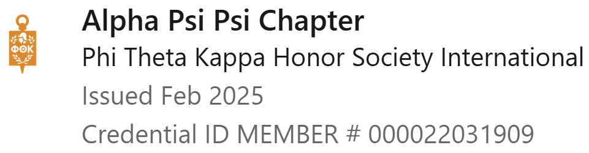

Aspiring SOC Analyst • Cybersecurity • Networking • Digital Forensics • Security Operations
I’m Catherine Jason, an early‑career cybersecurity and IT professional pursuing an AAS in Cybersecurity with a 3.96 GPA. I have hands‑on experience across networking, systems administration, digital forensics, scripting, and security operations developed through structured coursework, labs, and applied projects.
My background includes building and managing segmented network environments, administering Linux and Windows Server systems, and working with identity and access controls in Active Directory environments. I have also completed digital forensics investigations involving evidence acquisition, artifact analysis, and documentation while maintaining proper chain‑of‑custody procedures.
Through academic labs and guided exercises, I’ve gained experience with security monitoring, intrusion detection concepts, and log analysis workflows. I’m particularly interested in how organizations detect, investigate, and respond to security events, and how secure infrastructure supports those efforts.
Outside of formal coursework, I enjoy expanding my skills through hands‑on experimentation, virtual machines, small development projects, and guided cyber ranges. I’m motivated by curiosity, problem‑solving, and continuous learning, and I’m seeking entry‑level opportunities in IT or security operations where I can contribute, grow, and develop strong foundational experience in a structured environment.
Check out my chatbox below:
Linux (Ubuntu) GUI & command-line administration
Windows Server
Active Directory & Group Policy
Permissions & access control
Cisco Catalyst switching (2950, 2960 Plus, 3560G)
Cisco 4331 ISR router configuration
VLANs & routing fundamentals
Traffic analysis & baselining (Wireshark)
Log analysis & event correlation
SIEM familiarity (Splunk)
Alert triage & escalation concepts
Incident response lifecycle (entry-level)
Intrusion detection concepts
SNORT
Signature vs anomaly awareness
Monitoring workflows
Kali Linux (controlled lab environments)
Parrot Security OS (controlled lab environments)
Security tooling platform familiarity
Evidence handling & documentation
Disk imaging & artifact awareness
Chain-of-custody principles
FTK Imager, OSForensics, E3 Forensic Platform, ProDiscover
Real‑world academic and lab projects demonstrating applied IT and security skills.
Designed and implemented a segmented lab network using Cisco Catalyst switches and an ISR router.
Focus areas included VLAN configuration, routing, NAT, DHCP, and traffic analysis.
Network behavior was validated through packet inspection and controlled traffic testing.
Administered Linux and Windows Server environments in structured lab settings.
Responsibilities included Ubuntu Server administration using GUI and command‑line tools.
Configured Active Directory, Group Policy, and access controls following least‑privilege principles.
Conducted structured digital forensics investigations using industry‑standard tools.
Performed forensic imaging and examined system artifacts, registry data, and file metadata.
Documented findings while preserving evidence integrity and maintaining proper chain‑of‑custody.
Analyzed system and authentication logs to identify suspicious activity patterns.
Utilized SIEM tooling to correlate events and support alert triage workflows.
Applied incident response concepts to assess severity and determine escalation paths.
Alpha Psi Psi Chapter
Academic Honor Society

Click to view official certificate
You can reach me through the following platforms:
I welcome opportunities to connect with cybersecurity and IT professionals to exchange ideas, learn from others, and explore potential collaborations.